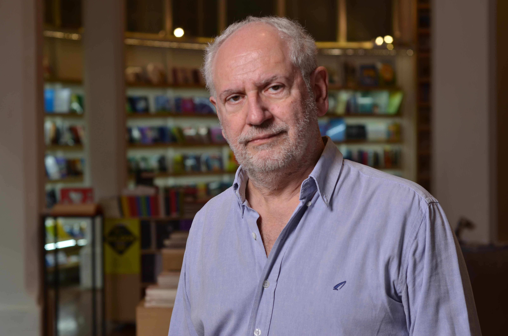

Esteban Calzetta
Investigador Principal
- Correo
- calzetta [at] df.uba.ar
- Oficina
- Oficina 2161 2do piso, Dpto. de Física, Pabellón 1
Publicaciones
Calzetta, Esteban. Scale invariant solutions in relativistic hydrodynamics. Preprint (2026).
InspireHEPORCIDPreprint
Perna, Guillermo Ezequiel; Centrone, Federico; Calzetta, Esteban. A First-Principles Thermodynamic Uncertainty Relation for Shortcuts to Adiabaticity. Entropy 28 (2026) 519 (2026).
InspireHEPORCIDPublicado
Elía, Juan Pablo; Cantarutti, Lucas; Calzetta, Esteban; Mirón-Granese, Nahuel. Hydrodynamic models of reheating. Phys.Rev.D 113 (2026) 023530 (2026).
InspireHEPORCIDPublicado
Calzetta, Esteban. Statistical closures from the Martin-Siggia and Rose approach to turbulence. Preprint (2025).
InspireHEPORCIDPreprint
Calzetta, Esteban. Energy spectrum of non-Newtonian turbulence. Physical Review Fluids 10 (2025) 054607 (2025).
InspireHEPORCIDPublicado
Kandus, Alejandra; Calzetta, Esteban. Propagation Speeds of Relativistic Conformal Particles from a Generalized Relaxation Time Approximation. Entropy 26 (2024) 927 (2024).
InspireHEPORCIDPublicado
Perna, Guillermo; Calzetta, Esteban. Limits on quantum measurement engines. Phys.Rev.E 109 (2024) 044102 (2024).
InspireHEPORCIDPublicado
Granese, Nahuel Mirón; Kandus, Alejandra; Calzetta, Esteban. Field Theory Approaches to Relativistic Hydrodynamics. Entropy 24 (2022) 1790 (2022).
InspireHEPORCIDPublicado
Calzetta, Esteban. Steady asymptotic equilibria in conformal relativistic fluids. Phys.Rev.D 105 (2022) 036013 (2022).
InspireHEPORCIDPublicado
Mirón-Granese, Nahuel; Calzetta, Esteban; Kandus, Alejandra. Primordial Weibel instability. JCAP 01 (2022) 028 (2022).
InspireHEPORCIDPublicado
Perna, Guillermo; Calzetta, Esteban. Linearized dispersion relations in viscous relativistic hydrodynamics. Phys.Rev.D 104 (2021) 096005 (2021).
InspireHEPORCIDPublicado
Calzetta, Esteban. Fully developed relativistic turbulence. Phys.Rev.D 103 (2021) 056018 (2021).
InspireHEPORCIDPublicado
Mirón-Granese, Nahuel; Kandus, Alejandra; Calzetta, Esteban. Nonlinear Fluctuations in Relativistic Causal Fluids. JHEP 07 (2020) 064 (2020).
InspireHEPORCIDPublicado
Larocca, Martin; Calzetta, Esteban A.; Wisniacki, Diego A.. Navigating on Quantum Control Solution Subspaces. Phys.Rev.A 102 (2020) 033108 (2020).
InspireHEPORCIDPublicado
Calzetta, Esteban; Cantarutti, Lucas. Dissipative type theories for Bjorken and Gubser flows. Int.J.Mod.Phys.A 35 (2020) 2050074 (2020).
InspireHEPORCIDPublicado
Larocca, Martin; Calzetta, Esteban A.; Wisniacki, Diego A.. Exploiting Landscape Geometry to Enhance Quantum Optimal Control. Phys.Rev.A 101 (2020) 023410 (2020).
InspireHEPORCIDPublicado
Calzetta, Esteban. The importance of being measurement. Preprint (2019).
InspireHEPORCIDPreprint
Miron-Granese, Nahuel; Calzetta, Esteban; Kandus, Alejandra. Nonlinear Dynamics of Tensor Modes in Conformal Real Relativistic Fluids. Preprint (2018).
InspireHEPORCIDPreprint
Calzetta, Esteban. Not quite free shortcuts to adiabaticity. Phys.Rev.A 98 (2018) 032107 (2018).
InspireHEPORCIDPublicado
Miron-Granese, Nahuel; Calzetta, Esteban. Primordial gravitational waves amplification from causal fluids. Phys.Rev.D 97 (2018) 023517 (2018).
InspireHEPORCIDPublicado
Aguilar, Milton; Calzetta, Esteban. Causal Relativistic Hydrodynamics of Conformal Fermi-Dirac Gases. Phys.Rev.D 95 (2017) 076022 (2017).
InspireHEPORCIDPublicado
Lamagna, Federico; Calzetta, Esteban. A functional renormalization method for wave propagation in random media. J.Phys.A 50 (2017) 315102 (2017).
InspireHEPORCIDPublicado
Calzetta, Esteban; Kandus, Alejandra. A Hydrodynamic Approach to the Study of Anisotropic Instabilities in Dissipative Relativistic Plasmas. Int.J.Mod.Phys.A 31 (2016) 1650194 (2016).
InspireHEPORCIDPublicado